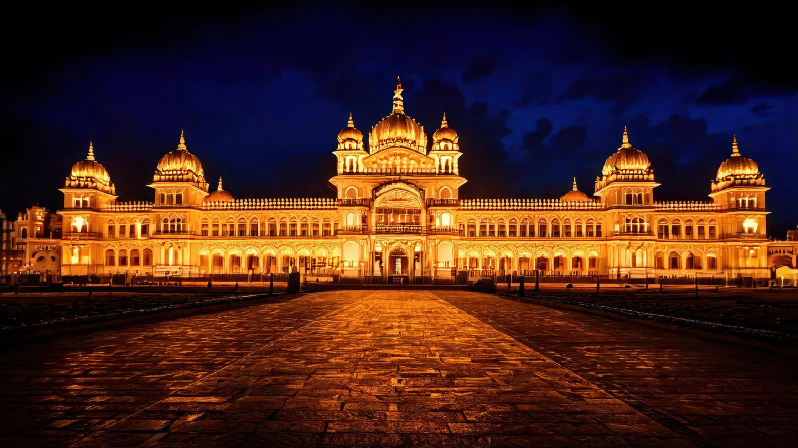

Mysore, officially known as Mysuru, is one of the most beautiful and culturally rich cities in Karnataka. Famous for its royal heritage, grand palaces, vibrant markets, and peaceful gardens, Mysore attracts thousands of travelers every year. Whether you are a history lover, nature enthusiast, spiritual seeker, or simply someone looking for a relaxing getaway, Mysore has something special to offer.
For first-time visitors, exploring Mysore can feel exciting yet slightly overwhelming because the city has many wonderful attractions. From majestic palaces to scenic hills and fascinating museums, every corner of Mysore tells a story of its royal past and cultural traditions.
If you are planning your first trip to Mysore, choosing the right places to visit can make your journey more enjoyable and memorable. Travelers visiting the city often prefer staying in centrally located accommodations such as Maurya Residency, as this place offers convenient access to many popular attractions in the city.
In this blog, we will explore the top 10 places to visit in Mysore for first-time travelers, helping you plan a perfect itinerary for your trip.
One of the most famous landmarks in India, Mysore Palace is a must-visit attraction for anyone traveling to Mysore. This grand palace was once the royal residence of the Wadiyar dynasty and remains one of the most magnificent palaces in the country.
The palace architecture is a beautiful blend of Hindu, Islamic, Rajput, and Gothic styles. Its grand halls, decorated ceilings, intricate carvings, and colorful stained glass windows create an unforgettable experience for visitors.
Inside the palace, you can see royal artifacts, paintings, and beautifully designed rooms that showcase the lifestyle of the Mysore kings. One of the most magical moments to witness is the evening illumination, when the entire palace is lit up with thousands of lights.
Visiting Mysore Palace gives travelers a deep understanding of the city’s royal history and cultural heritage.
Chamundi Hills is one of the most peaceful and scenic places to visit in Mysore. Located around 13 kilometers from the city center, this hill offers stunning views of the entire city.
At the top of the hill stands the famous Chamundeshwari Temple, dedicated to Goddess Chamundi. The temple attracts thousands of devotees and tourists every year.
While traveling up the hill, visitors can also see the giant Nandi statue, one of the largest statues of Nandi in India. The peaceful surroundings and cool breeze make Chamundi Hills a perfect place for both spiritual visits and photography.
The sunset view from the hilltop is especially breathtaking.
Brindavan Gardens is one of the most popular tourist attractions near Mysore. Located next to the Krishna Raja Sagar Dam, this garden is famous for its beautiful landscaping and musical fountain show.
The gardens are filled with colorful flowers, green lawns, and water fountains arranged in symmetrical patterns. In the evening, visitors gather to watch the musical fountain show, where water dances to music with colorful lighting effects.
This place is ideal for families, couples, and nature lovers who want to enjoy a relaxing evening surrounded by greenery and beautiful scenery.
The Mysore Zoo, also known as Sri Chamarajendra Zoological Gardens, is one of the oldest and best-maintained zoos in India.
The zoo houses a wide variety of animals including lions, tigers, elephants, giraffes, zebras, and many rare bird species. The zoo is known for its spacious enclosures that provide a natural environment for the animals.
Walking through the zoo is both educational and entertaining, especially for families traveling with children. The zoo also focuses on wildlife conservation and awareness.
A visit to Mysore Zoo usually takes around two to three hours, making it a great addition to your travel itinerary.
St. Philomena’s Church is one of the largest churches in India and a remarkable architectural landmark in Mysore.
Built in the neo-Gothic style, the church features tall twin towers, beautiful stained glass windows, and a peaceful interior. The stained glass panels inside the church depict scenes from the life of Jesus Christ.
Visitors often admire the impressive architecture and calm atmosphere of this historic church. Even those who are not religious enjoy visiting the church because of its beauty and historical significance.
Jaganmohan Palace is another historic palace in Mysore that now serves as an art gallery and museum.
The palace houses one of the finest collections of traditional Indian paintings, including works by the famous artist Raja Ravi Varma. Visitors can also see antique furniture, musical instruments, sculptures, and historical artifacts.
Art lovers and history enthusiasts will particularly enjoy exploring this palace, as it provides valuable insights into the artistic heritage of Mysore.
Karanji Lake is a peaceful natural attraction located near Mysore Zoo. It is an ideal place for travelers who want to relax away from the busy city streets.
The lake is surrounded by lush greenery and walking paths. Visitors can enjoy boating, bird watching, and photography. The lake area also features a large walk-through aviary, where different species of birds can be seen up close.
Nature lovers often spend quiet afternoons here enjoying the calm atmosphere and beautiful surroundings.
The Railway Museum in Mysore is a fascinating place for visitors interested in trains and transportation history.
The museum displays vintage locomotives, royal train coaches, railway equipment, and photographs showing the development of railways in India. One of the highlights is the royal carriage used by the Maharaja of Mysore.
Children especially enjoy the mini train ride available inside the museum premises.
This museum provides an interesting and educational experience for travelers of all ages.
Devaraja Market is one of the oldest and most vibrant markets in Mysore. Walking through the market is a unique cultural experience.
The market is filled with colorful flower stalls, fresh fruits, vegetables, spices, incense sticks, and traditional Mysore products. The fragrance of jasmine flowers and sandalwood fills the air, creating a lively atmosphere.
Visitors can buy local souvenirs, Mysore silk products, and traditional items to take home as memories of their trip.
Exploring this market gives travelers a glimpse into the daily life and culture of Mysore.
Located around 20 kilometers from Mysore, Ranganathittu Bird Sanctuary is a paradise for bird watchers and nature lovers.
The sanctuary is home to many species of migratory birds including painted storks, pelicans, herons, and kingfishers. Visitors can take a boat ride along the river to observe birds nesting on the small islands.
The peaceful environment and natural beauty make this sanctuary a wonderful place for wildlife photography and nature exploration.
If you are visiting Mysore for the first time, a little planning can help you make the most of your trip.
Most importantly, take time to enjoy the relaxed pace and cultural charm that Mysore offers.
The best time to visit Mysore is between October and March when the weather is pleasant and ideal for sightseeing.
Two to three days are usually enough to explore the major attractions in Mysore comfortably.
Yes, Mysore is a family-friendly destination with attractions such as Mysore Palace, Mysore Zoo, gardens, museums, and temples.
Mysore is approximately 145 kilometers from Bangalore and can be reached by road, train, or bus in about 3 to 4 hours.
Some of the must-visit places include Mysore Palace, Chamundi Hills, Brindavan Gardens, Mysore Zoo, and St. Philomena’s Church.
Mysore is truly a city that blends history, culture, nature, and spirituality into one unforgettable travel experience. From the majestic Mysore Palace and scenic Chamundi Hills to vibrant markets and peaceful lakes, the city offers something special for every traveler.
For first-time visitors, exploring these top attractions provides a perfect introduction to the beauty and heritage of Mysore. Each destination tells a unique story about the city’s royal past and cultural traditions, making your journey both enriching and memorable.
While planning your trip, choosing comfortable accommodation in a convenient location can make sightseeing easier. Many travelers prefer staying at centrally located places such as Maurya Residency, as they provide easy access to major tourist attractions and important areas of the city.
Whether you are traveling with family, friends, or on a solo adventure, Mysore promises an experience filled with beautiful memories, fascinating history, and warm hospitality.